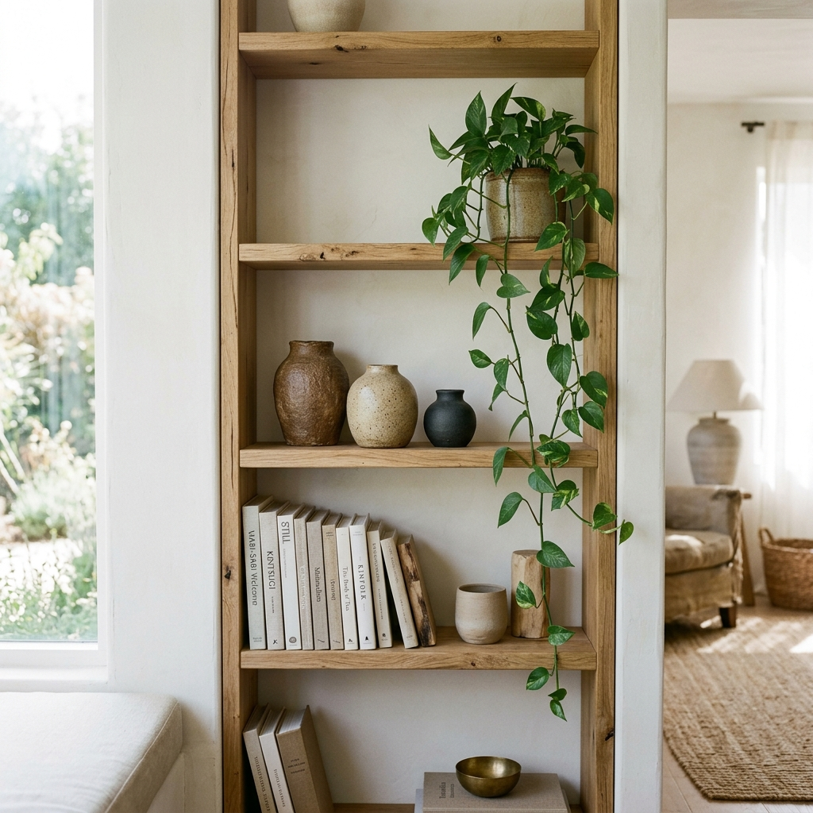
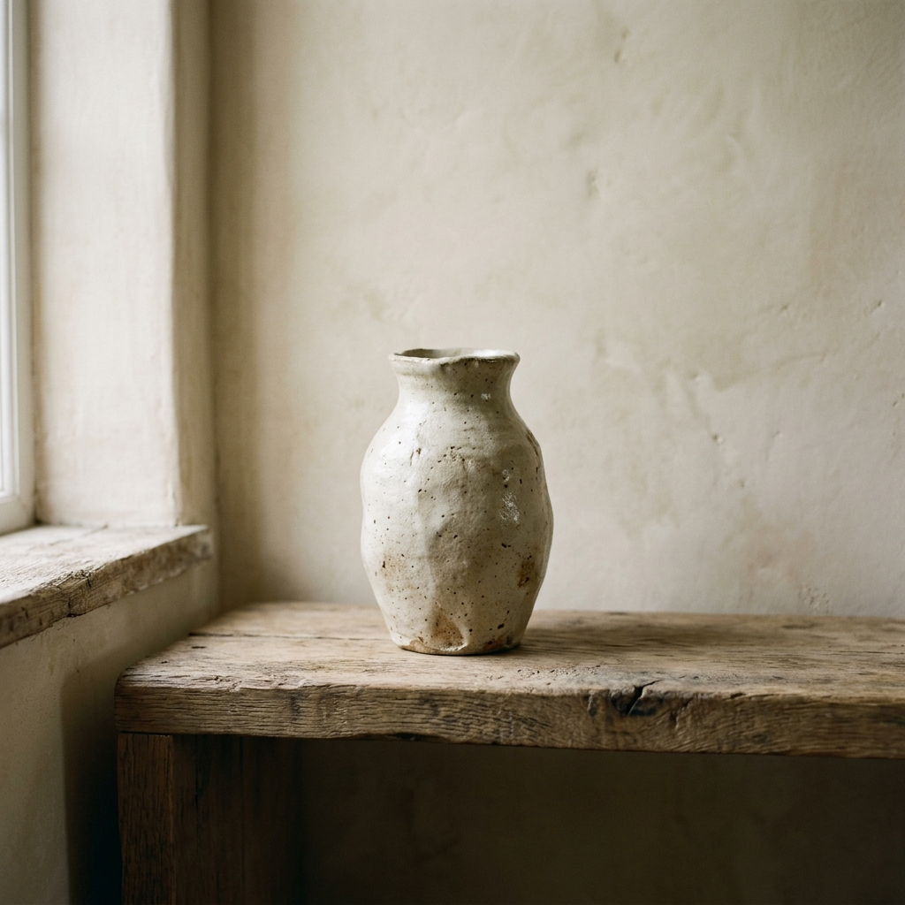
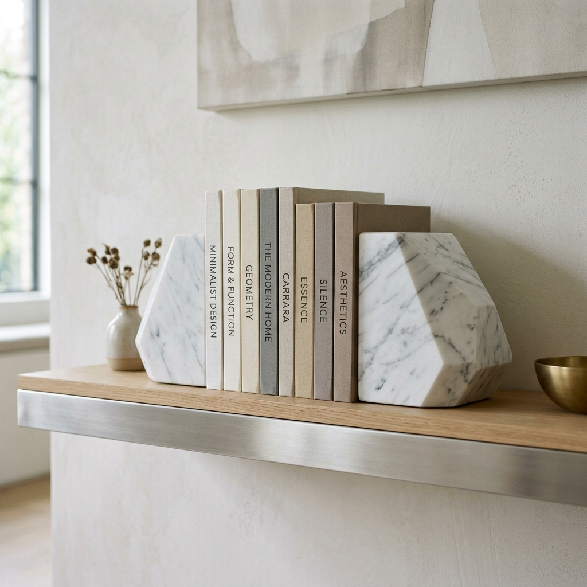
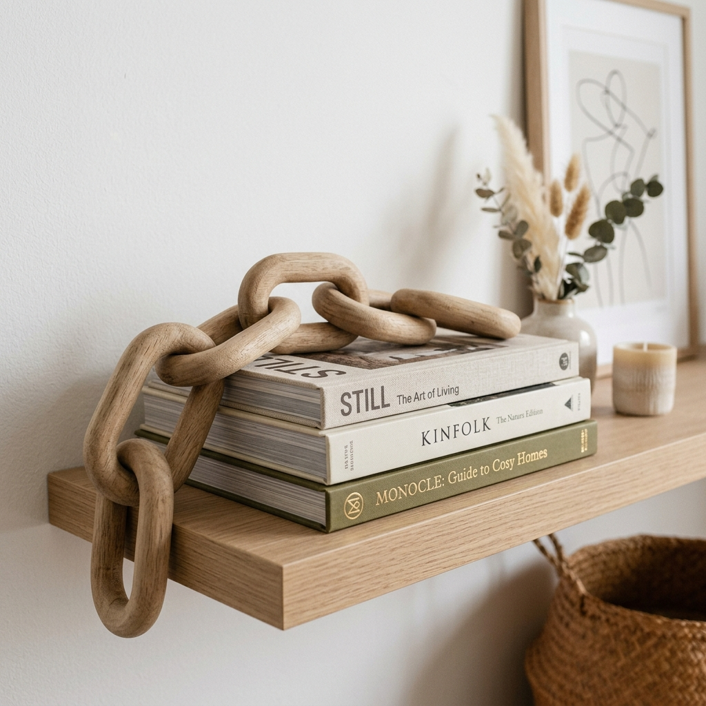
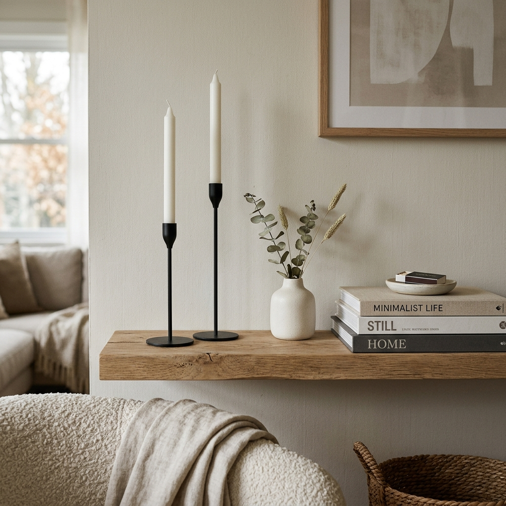
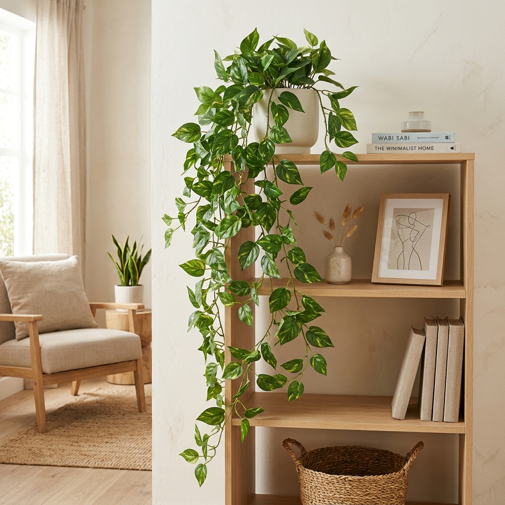
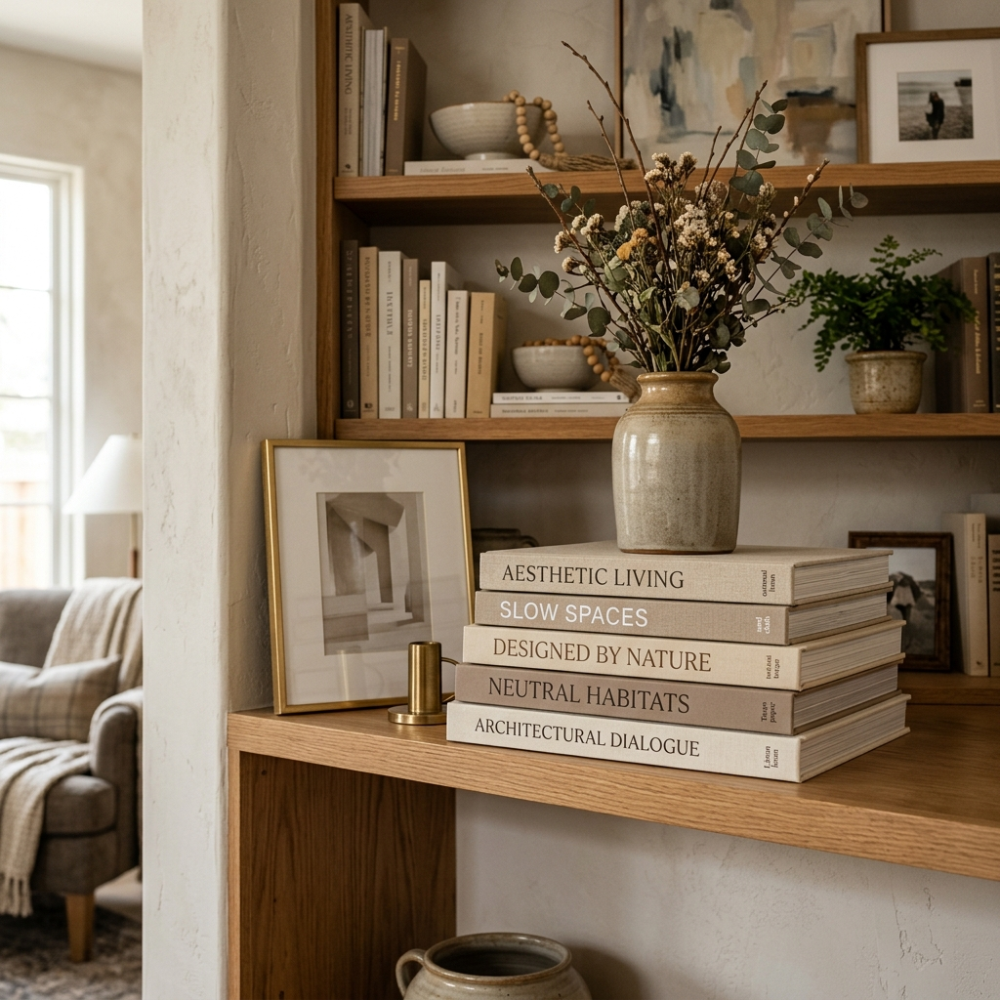
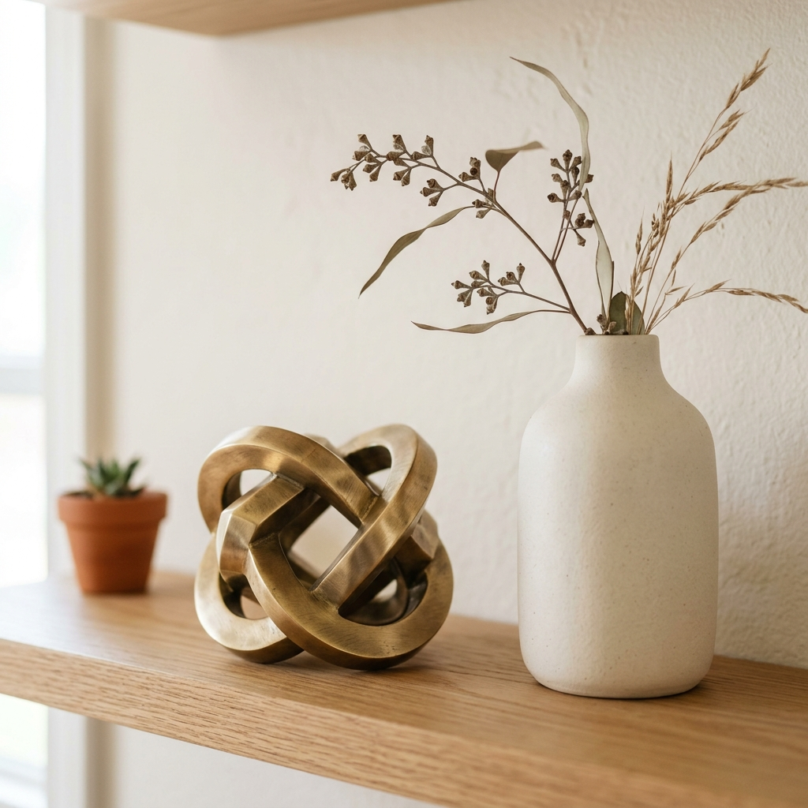

How to Style a Minimalist Bookshelf Without the Clutter
Learn how to style a minimalist bookshelf like an interior designer. Discover the secrets to using negative space, grouping objects, and aesthetic shelf decor.
Let's talk about the elephant in the room: bookshelves are incredibly stressful to decorate.
If you just shove all your paperbacks onto the shelves, your living room ends up looking like a chaotic university library. But if you try to make it look "aesthetic" by adding a bunch of random knick-knacks, it suddenly looks like a crowded souvenir shop.
Getting that perfect, Pinterest-worthy minimalist bookshelf—the kind that looks effortlessly curated, airy, and sophisticated—feels like an impossible balancing act. You stare at the empty shelves, put a vase down, step back, squint, move the vase two inches to the left, and eventually just give up.
I have been there. We have all been there. The truth is, styling a minimalist bookshelf has nothing to do with having a perfectly matched library of books or buying incredibly expensive art. It comes down to a few very specific, easily repeatable visual rules. If you are ready to transform your cluttered bookcase into a stunning architectural focal point, let’s break down the exact formula interior designers use to style minimalist shelves.

The Golden Rule of Minimalist Shelves: Negative Space is Your Friend
Before we put a single item on a shelf, we have to talk about the most important element of minimalist design: Negative Space.
Negative space simply means empty space. In a cluttered room, every square inch of a shelf is filled. In a minimalist room, the empty space between the objects is just as important as the objects themselves. Think of your bookshelf like an art gallery. If you cram 100 paintings onto a single wall, nobody can appreciate any of them. But if you hang one beautiful painting on a blank white wall, it commands attention.
YOUR ACTION STEP
When you are styling, commit to leaving at least 30% to 40% of every shelf completely empty. This allows the eye to rest and makes the objects you do display feel intentional and important.
Step 1: Start with a Blank Canvas
You cannot style a bookshelf by just rearranging what is already there. You have to take everything off. Dust the shelves, stand back, and look at the structure itself.
Now, gather all your books and decor items and put them on your dining table or floor. We are going to "shop" from this pile.
Step 2: The Book Foundation (Horizontal vs. Vertical)
Books are the foundation of a bookshelf, but how you place them determines the entire vibe. Stacking 50 books vertically next to each other creates a solid, heavy block of visual weight. To create movement and lightness, you need to alternate how you place your books.
- The Vertical Lean: Place 3 to 5 books vertically. Don't fill the whole shelf. Let them lean slightly, or hold them up with a heavy, architectural bookend.
- The Horizontal Stack: On the next shelf down, place 2 to 3 large books horizontally. This breaks up the vertical lines and acts as a tiny pedestal for smaller decor items.
A Controversial Tip: Flip the Spines or Color Block? If you have a collection of brightly colored paperbacks, they will instantly ruin a calm, neutral aesthetic. Either group all books by color (Color Block), or turn the books so the neutral, creamy pages face outward (The "Pages Out" trend).
📋 Step 3: Layering in the Decor (Shop The Look)
If you only use books, the shelf looks heavy. To make it look styled, we need to introduce varying shapes, textures, and heights. Remember the rule of threes: objects look best when grouped in odd numbers. Here are the essential pieces you need:
Ceramic Vases
Bookshelves are full of harsh, straight lines (the shelves themselves, the book spines). You desperately need curves to soften the look. An organic, irregularly shaped ceramic vase—left completely empty or holding a single dried branch—adds instant wabi-sabi elegance.

Recommended: Neutral Ceramic Vase Organic Shape
Heavy Marble Bookends
Flimsy metal bookends that slide around are useless. Invest in heavy, geometric bookends made of natural materials like marble, travertine, or solid wood. They act as standalone sculptures while keeping your vertical books perfectly upright.

Recommended: Marble Bookends Heavy Duty Geometric
Wooden Chain Link Decor
A wooden chain link is an interior designer's secret weapon. It drapes beautifully over a stack of horizontal books or spills out of a bowl, connecting different elements and adding a warm, tactile wood texture.

Recommended: Wooden Decorative Chain Link Decor
Minimalist Taper Candlesticks
You never want all the objects on a shelf to be the same height; it looks flat. A set of incredibly thin, modern metal taper candle holders instantly draws the eye upward, filling the vertical negative space without adding visual clutter.

Recommended: Minimalist Metal Taper Candle Holders Set
Trailing Faux Plant
A minimalist shelf can quickly feel cold and sterile. You need life. A trailing plant placed on the top shelf, allowing the leaves to cascade down the side, breaks up the grid pattern of the bookcase. If your room lacks sunlight, a high-quality faux pothos works perfectly.

Recommended: Faux Trailing Pothos Plant Realistic
Decorative Display Books
Sometimes you don't want to use your actual reading books for decor. Stacking oversized, neutral-toned hardcover books (like fashion, architecture, or design books) creates the perfect elevated base to display smaller objects.

Recommended: Decorative Faux Books Neutral Stack
Abstract Brass Accents
Minimalism often relies on matte textures, so you need a tiny pop of shine to reflect light. A small, structural brass object—like a decorative knot or sphere—placed next to a matte ceramic vase creates a beautiful contrast.

Recommended: Small Brass Structural Object Decor
Step 4: The "Z-Pattern" Visual Check
Once you have your books and your decor placed, take five steps back. We need to check the visual weight using the "Z-Pattern."
Your eye naturally reads a bookshelf from top-left to bottom-right, scanning back and forth in a 'Z' shape.
- If you put a heavy, dark vase on the top left, you need something of similar visual "weight" on the middle right, and the bottom left.
- If all your plants are on the left side, the shelf will feel lopsided.
- If all your books are on the bottom, the shelf will feel like it's sinking.
Move items diagonally from each other to balance the weight. If a shelf feels too heavy, take one item away. Remember, when in doubt, take it out.
Final Thoughts: Let it Breathe
Styling a minimalist bookshelf is an exercise in restraint. It is not about displaying everything you own; it is about showcasing the things you truly love in a way that allows them to shine.
Don't be afraid of empty space. Don't be afraid to leave a shelf holding nothing but a single, beautiful bowl. A well-styled shelf is a living, breathing part of your home—you can change it, tweak it, and update it as your style evolves. Now, go clear off those shelves, pull out your favorite pieces, and start curating your masterpiece!